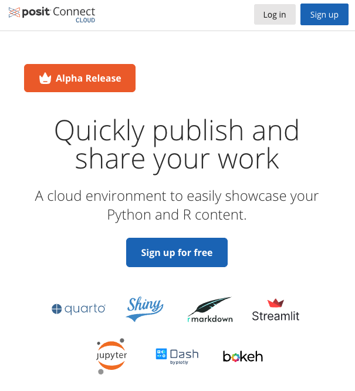

Posit Connect Cloud
Deployment Process
In the Alpha release, the only way to deploy content is by storing your code in a public GitHub repository.

Alex Chisholm via Quarto and Closeread | December 2024
Shouldn’t it be easier to share your work?
You’re a data professional, not an software engineer.
With Connect Cloud, it is.

Supported Frameworks
R
Python
Deployment Process
In the Alpha release, the only way to deploy content is by storing your code in a public GitHub repository.
What do you need? Your code and a requirements.txt file.
Option 1: Capture your entire project environment
pip freeze > requirements.txt
Option 2: Create a requirements.txt file and add the required packages line by line, with or without specific versions.
Read more about Python dependencies in the Connect Cloud docs
Python Deployments
What do you need? Your code and a manifest.json file.
Create it with rsconnect::writeManifest()
Read more about R dependencies in the Connect Cloud docs
R Deployments
Active Users
20% of users intend to only publish documents.
Quarto is the most common framework used.
15% intend to only deploy applications.
Shiny for R and Python lead the way.
The majority will create both data applications and documents.
What will you share with the world?
Create Your Account
Worry about your code, not your infrastructure.
Alex Chisholm via Quarto and Closeread | December 2024
---
title: Posit Connect Cloud
format:
closeread-html:
code-tools: true
cold-fold: true
smooth-scroll: true
remove-header-space: true # don't show header and doc title
cr-style:
narrative-background-color: "#EE6331"
narrative-background-color-overlay: "#419599"
narrative-text-color-overlay: "#f2f2f2"
narrative-text-color-sidebar: "#000000"
narrative-background-color-sidebar: "#f2f2f2"
narrative-font-family: "Arial, serif"
narrative-font-size: "20px"
narrative-border-radius: "15px"
narrative-sidebar-width: "1fr"
narrative-overlay-max-width: "600px"
# narrative-overlay-min-width: "100px" # better to leave alone according to docs
narrative-outer-margin: "25px"
poem-font-family: "Arial, serif"
section-background-color: "#447099"
---
:::{.cr-section layout="overlay-center"}

:::{#cr-question}
You're a data professional, not an software engineer.
:::
@cr-question Shouldn't it be easier to share your work?
:::
:::{.cr-section layout="sidebar-right"}
:::{#cr-adventure }
With Connect Cloud, it is.
{width="75%"}
:::
@cr-adventure
::: {layout-ncol=3}
[Supported frameworks](#frameworks){.btn .btn-outline-primary .btn role="button" data-toggle="tooltip" title="Here's a tooltip"}
[Deployment process](#deployment){.btn .btn-outline-primary .btn role="button" data-toggle="tooltip" title="Here's a tooltip"}
[User metrics](#metrics){.btn .btn-outline-primary .btn role="button" data-toggle="tooltip" title="Here's a tooltip"}
[More information](#info){.btn .btn-outline-primary .btn role="button" data-toggle="tooltip" title="Here's a tooltip"}
:::
:::
:::{.cr-section layout="overlay-center"}
Supported Frameworks
:::
:::{.cr-section layout="sidebar-left"}
:::{#cr-r }
R
:::
@cr-r


:::
:::{.cr-section layout="sidebar-left"}
:::{#cr-python }
Python
:::
@cr-python


:::
<!-- deployment section -->
:::{.cr-section layout="overlay-center"}
:::{#cr-github}

:::
Deployment Process @cr-github
In the Alpha release, the only way to deploy content is by storing your code in a public GitHub repository.
:::
<!-- python deployments -->
:::{.cr-section layout="sidebar-left"}
:::{#cr-python-deploy }
Python Deployments
:::
@cr-python-deploy
**What do you need?** Your code and a *requirements.txt* file.
Option 1: Capture your entire project environment <br><br> `pip freeze > requirements.txt`
Option 2: Create a requirements.txt file and add the required packages line by line, with or without specific versions.
Read more about Python dependencies in the [Connect Cloud docs](https://docs.posit.co/connect-cloud/how-to/python/dependencies.html)
:::
<!-- r deployments -->
:::{.cr-section layout="sidebar-left"}
:::{#cr-r-deploy }
R Deployments
:::
@cr-r-deploy
**What do you need?** Your code and a *manifest.json* file.
Create it with `rsconnect::writeManifest()`
Read more about R dependencies in the [Connect Cloud docs](https://docs.posit.co/connect-cloud/how-to/r/dependencies.html)
:::
:::{.cr-section layout="overlay-center"}
Active Users
:::
::::{.cr-section}
20% of users intend to only **publish documents**. <br><br> Quarto is the most common framework used. @cr-chart-docs
```{r}
#| label: setup
#| echo: false
#| output: false
library(dplyr)
library(ggplot2)
library(scales)
library(stringr)
mydf <- data.frame(
app_mode = c("Shiny R", "Shiny Python", "Quarto", "Static Files",
"Streamlit", "Jupyter Notebook", "R Markdown",
"Dash", "Bokeh"),
app_type = c("Application", "Application", "Document", "Document", "Application", "Document", "Document", "Application", "Application"),
freq = c(0.309, 0.224, 0.183, 0.0809, 0.0798, 0.0629, 0.0438, 0.0135, 0.00337)
)
chart_subtitle <- 'December 2025 | Percent of Total'
```
:::{#cr-chart-docs}
```{r}
ggplot(mydf, aes(x = reorder(app_mode, desc(freq)), y = freq, fill = app_type, alpha = app_type == "Document")) +
geom_col() +
scale_y_continuous(label = percent) +
labs(title = "Deployed work on Connect Cloud",
subtitle = chart_subtitle,
y = NULL, x = NULL) +
scale_x_discrete(labels = function(x) str_wrap(x, width = 10)) +
scale_alpha_manual(values = c(0.1, 1)) +
theme_minimal() +
theme(legend.position = 'none')
```
:::
15% intend to only **deploy applications**. <br><br> Shiny for R and Python lead the way. @cr-chart-apps
:::{#cr-chart-apps}
```{r}
ggplot(mydf, aes(x = reorder(app_mode, desc(freq)), y = freq, fill = app_type, alpha = app_type == "Application")) +
geom_col() +
scale_y_continuous(label = percent) +
labs(title = "Deployed work on Connect Cloud",
subtitle = chart_subtitle,
y = NULL, x = NULL) +
scale_x_discrete(labels = function(x) str_wrap(x, width = 10)) +
scale_alpha_manual(values = c(0.1, 1)) +
theme_minimal() +
theme(legend.position = 'none')
```
:::
The majority will create both data applications and documents. <br><br> **What will you share with the world?** <br><br> [Create Your Account](https://connect.posit.cloud/){.btn .btn-outline-primary .btn role="button" data-toggle="tooltip" title="Here's a tooltip"} @cr-chart-all
:::{#cr-chart-all}
```{r}
ggplot(mydf, aes(x = reorder(app_mode, desc(freq)), y = freq, fill = app_type)) +
geom_col() +
scale_y_continuous(label=percent) +
labs(title = "Deployed work on Connect Cloud", subtitle = chart_subtitle, y = NULL, x = NULL) +
scale_x_discrete(labels = function(x) str_wrap(x, width = 10)) +
theme_minimal() +
theme(legend.position = 'none')
```
:::
::::
<!-- CTA -->
:::{.cr-section layout="overlay-center"}
Worry about your code, not your infrastructure. <br><br> 
:::
<!-- Resources -->
# {#info}
::: {layout-ncol=3}
[Read the Docs](https://docs.posit.co/connect-cloud/){.btn .btn-outline-primary .btn role="button" data-toggle="tooltip" title="Here's a tooltip"}
[Visit the Community](https://forum.posit.co/c/posit-professional-hosted/posit-connect-cloud/67){.btn .btn-outline-primary .btn role="button" data-toggle="tooltip" title="Here's a tooltip"}
[Sign up for free!](https://connect.posit.cloud/){.btn .btn-outline-primary .btn role="button" data-toggle="tooltip" title="Here's a tooltip"}
:::
<br><br>
::: {style="font-size: 75%;"}
[Alex Chisholm](https://bsky.app/profile/alex-chisholm.bsky.social) via Quarto and Closeread | December 2024
:::